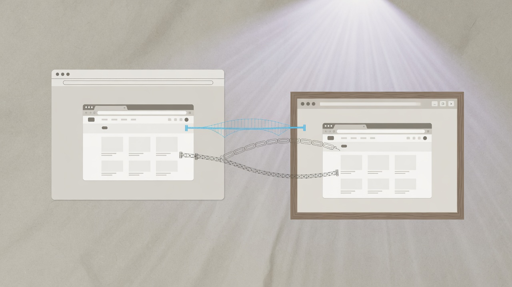

At Postman, “put the product on the web” was not a greenfield rewrite. It was a constraint problem: a desktop-native API tool used by millions of developers, enterprise pressure for browser access, browser security that blocked the old execution model, and a conference date that would not move. I was the engineering manager accountable for cross-functional delivery—architecture choices, security and infra dependencies, product scope, and keeping the team focused when the path was still uncertain. What follows is what that launch actually taught me.

We were borrowing trust, not inventing it
Postman already had a reputation. Developers had muscle memory for collections, environments, and the desktop workflow. A weak web surface would not be judged as “v1 of a new product.” It would be judged as Postman getting worse. That constraint changed prioritization: That detail matters in practice because the surrounding system, incentives, and failure modes usually determine whether the idea survives contact with production and with other teams.
- Core workflow parity beat architectural purity.
- Predictable behavior beat clever browser tricks.
- Explicit “not on web yet” beat silent missing features.
Trust is spendable once. We treated every launch-day gap as a brand risk, not a backlog curiosity. That detail matters in practice because the surrounding system, incentives, and failure modes usually determine whether the idea survives contact with production and with other teams. I treat this as an operating constraint rather than a slogan: if you cannot explain how it shows up in ownership, metrics, and day-to-day decisions, it will not survive the next roadmap fight.
The existing system was a stakeholder
Greenfield essays assume you choose the stack. We inherited runtimes, sync assumptions, offline collaboration expectations, and a large surface area of API tooling behavior. The desktop app was not legacy to be embarrassed about—it was the system of record for how users worked. The hard question was never “can we draw a web architecture?” It was:
- What must be reused so results stay correct?
- What must be isolated so the browser can ship?
- What bugs will the web amplify because usage patterns change?
Treating the existing product as a stakeholder forced interface thinking: web was a new client of a product system, not a parallel fantasy product. That detail matters in practice because the surrounding system, incentives, and failure modes usually determine whether the idea survives contact with production and with other teams.
Browser security forced a hybrid execution model
Desktop Postman could talk to the network like a normal app. Browsers cannot. CORS, sandboxing, and the lack of unrestricted local network access were not edge cases—they were the product. We ended up with multiple execution paths, each owning a real constraint: That detail matters in practice because the surrounding system, incentives, and failure modes usually determine whether the idea survives contact with production and with other teams.
- Browser Agent — run requests directly when the browser is allowed to.
- Cloud Agent — execute in a cloud-hosted environment when the browser cannot reach the target cleanly (cross-origin and related limits).
- Desktop Agent — bridge the web UI to a local/on-prem network when the user’s world is not reachable from the public cloud.
That hybrid model was the architectural heart of the launch. It was also an organizational heart: security, infra, and product had to agree on what “send request” meant in three different trust domains. If there is one technical lesson I would keep from the project, it is this: when the environment cannot support your old runtime assumptions, make the execution model explicit. Hiding three behaviors behind one button without a design is how you get support chaos.
Launch day is a reliability event
Postman on the Web was announced at POSTCON. Missing the date was not a soft failure mode. That does not mean we shipped fantasy scope. It means readiness was defined as: That detail matters in practice because the surrounding system, incentives, and failure modes usually determine whether the idea survives contact with production and with other teams.
- a user journey that worked under real constraints,
- a rollout plan that could expand,
- and a team that knew what was deliberately later.
We phased capability instead of pretending the first public cut was the end state: start with constrained access patterns, then enable richer API execution, with the cloud execution path continuing to mature after the headline launch. Marketing owns the keynote. Engineering owns the degradation and expansion story. A launch is not a timestamp. It is a reliability event with an audience.
Cross-team coordination was the critical path
The longest pole was rarely a single function. Security, infrastructure, performance, and product had legitimate, conflicting optimization targets. In that environment, “the engineers will figure it out in Slack” is not a plan. What worked in practice: That detail matters in practice because the surrounding system, incentives, and failure modes usually determine whether the idea survives contact with production and with other teams.
- Executive air cover for dedicated capacity — without it, every dependency team optimizes for their prior roadmap.
- A weekly cross-functional sync whose job was unblocking, not status theater.
- Written scope decisions — what was in for conference day, what was explicit debt, who owned the follow-through.
My calendar was part of the architecture. Ambiguity multiplies under deadline pressure; decision logs shrink it. That detail matters in practice because the surrounding system, incentives, and failure modes usually determine whether the idea survives contact with production and with other teams. I treat this as an operating constraint rather than a slogan: if you cannot explain how it shows up in ownership, metrics, and day-to-day decisions, it will not survive the next roadmap fight.
Performance was a product constraint, not polish
API collections can be huge. A desktop WebView habit does not automatically become a good browser experience. Large histories and large collections will punish naive rendering. We invested in boring, necessary work: more efficient history/state handling, lazy loading, virtualized UI for large lists. That work is easy to dismiss as polish until a power user loads a real workspace and the tab melts. Developer products have an unforgiving feedback loop. Users can tell when the runtime is lying, when the UI is papering over cost, and when error messages are decorative. They will also write about it publicly. That is part of the market.
What I would repeat
- Write non-goals as carefully as goals. Conference-day success needs a spine, not a vision deck.
- Instrument journeys, not only services. “Request failed” is incomplete without which agent path and which constraint.
- Rehearse partial failure — auth issues, agent unavailability, dependency brownouts—not only happy-path demos.
- Staff the week after launch like it is part of launch. The real traffic pattern arrives after the keynote.
- Protect engineers from thrash by batching stakeholder input; panic multiplies bad architectural shortcuts.
What I would avoid
- Betting the public launch on an unfinished platform rewrite that is “almost ready.”
- Hiding scope cuts inside the word “polish.”
- Success metrics only a marketing team can love.
- Hero culture that makes the second week impossible to staff.
Impact, carefully stated
We hit the conference launch window. The web surface became a real product path, not a demo—with cloud execution continuing to land on its own schedule. Adoption afterward made the strategic point obvious: users wanted Postman without installing a desktop app first, and the company was no longer only a local-first tool. Exact figures belong in contexts where they can be sourced and defended. The leadership lesson does not depend on a screenshot of a dashboard: the hybrid execution model plus phased delivery was the only way to respect browser constraints without abandoning the desktop product’s trust.
Closing
“Led the web launch” sounds like a milestone. The work was constraint management: borrowed trust, inherited systems, browser security, conference time, cross-team conflict, and performance under real collections. Code expressed the answers. The answers were the constraints we were willing to name early—and the execution model we built so users did not have to understand them all at once.